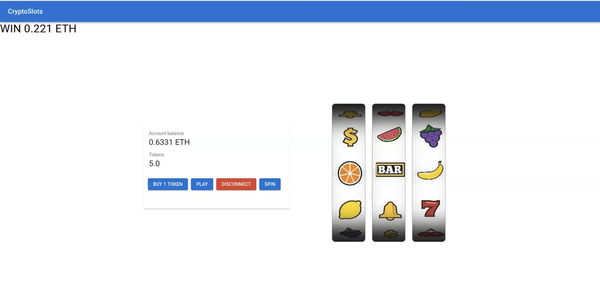
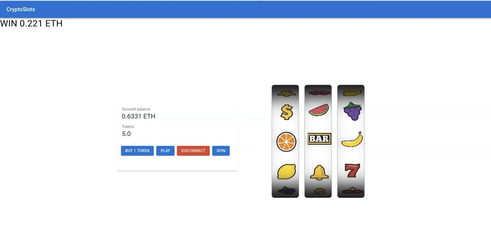
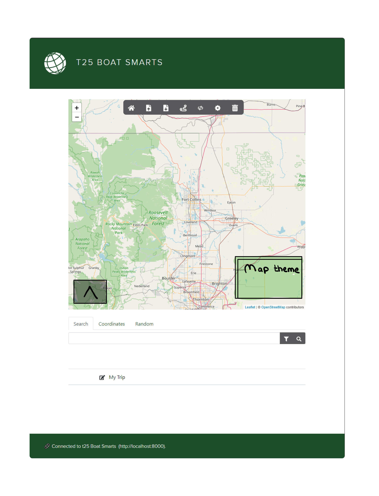
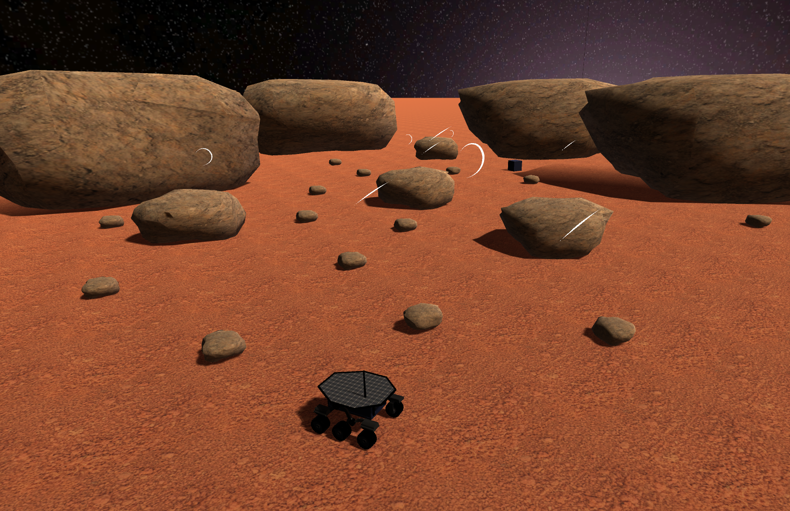
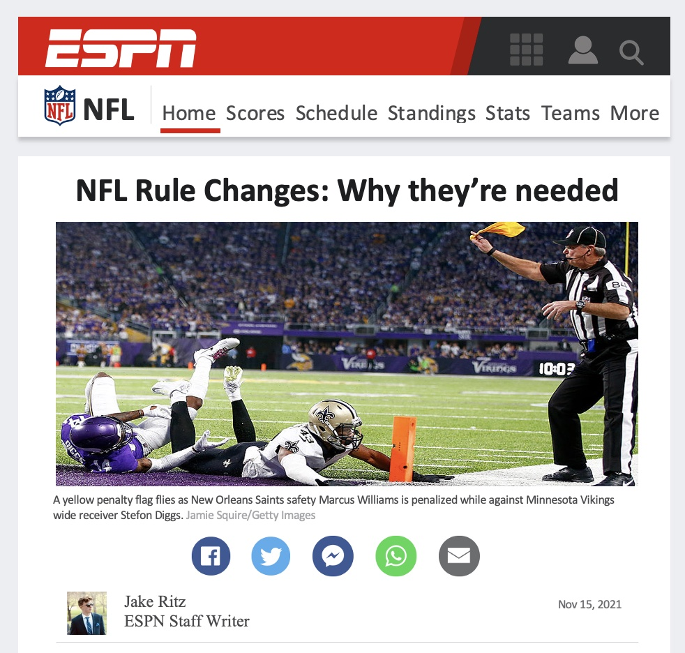
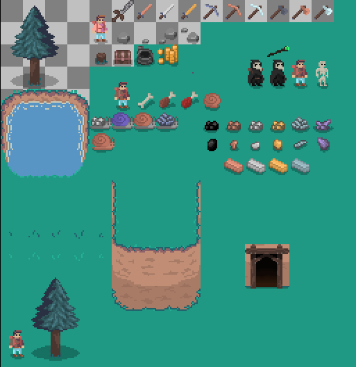

RetroScape
RetroScape is a new 2D puzzle game from Jelli Studios. Alone in space, players must solve difficult puzzles by maneuvering objects and themselves using time manipulation.
Seven-day competition about making a complete video game based around a specific theme chosen by the hosts and voted on by the 38,600 participants! Our theme was Rewind.
A two-person team, we started making, and finished an indie video game that reached a total of over 2,000 playtests in an Itch.io Game Jam competition.
 

The goal of this project was to build an on-chain slot machine, where users pay ETH in exchange for an ERC-20 token which grants them access to “spin” the slot machine. Each one of the Play Tokens (project's ERC-20 token), can be bought for a constant rate of .01 ETH. The ETH paid by users goes into a pool of available winnings for the users.
To generate the user's spin, an on-chain pseudo random number was implemented on-chain. The frontend of the Slot Machine Smart Contract is constructed using the React.js library in addition to a Web3 library called, useDapp, in order to interface with the Goleri Test Network.

A lifelong friend and I established Jelli Studios LLC with the goal of creating independent video games.
Every project we work on has its whole lifespan taken into account, from conception to completion.
We establish future project milestones, and timeframes, as well as keep track of project paperwork, resource allocations, and project reports.
After graduation, we intend to completely release an indie game on Steam.

I developed a program that mimicked Google Maps for flights all around the world.
Users have the ability to plan trips to get an optimized route to their desired destinations.
The Base architecture is a JavaScript single page web application in an HTML5 browser that uses RESTful APIs to access Micro-services provided by a Java server running on Linux.

I created a Mars Rover in Blender that can be played in the Unity game engine. Using straightforward 3D gaming mechanics, players may explore Mars' rugged landscape.
This was my first effort to integrate my abilities into a three-dimensional, immersive universe. I refined my animation and modeling abilities to create this world as realistic and immersive as possible.

I used my skills to replicate an ESPN article that gave insight on the recent controversial rule changes in the NFL. I highlight concussions and leg injuries, which have been the points of contention in the past few decades in the NFL.

This was Jelli Studio's first attempt at making a 2d video game. This unfinished project helped refine our skillsets: Ai-enemy tracking utilizing ray tracing, object inventory management, player movement, 2D animations, and many more features are among the project's key strengths.